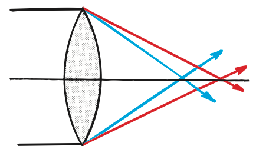

Optical Applications
Mathematical idea: This synthesis section does not add a new formula; it uses ray paths, earlier relationships, and evidence to judge devices and claims.
You will connect the eye, corrective lenses, prisms, fibers, mirages, rainbows, glare, shadows, and lens defects to the optical principles developed across the unit.
Learning Target
Students will apply reflection, refraction, lenses, and light-wave ideas to optical devices, vision, color effects, and real-world design problems.
I can statements
- I can explain how optical devices use reflection, refraction, or lenses.
- I can describe how the eye focuses light and why corrective lenses are useful.
- I can explain how optical fibers guide light.
- I can analyze real-world phenomena such as mirages, rainbows, glare, shadows, and image formation.
- I can evaluate an optical design or claim using evidence and physics vocabulary.
Vocabulary
These are words you will see in this section. Do not define them yet.
- optical device
- corrective lens
- optical fiber
- total internal reflection
- dispersion
- mirage
- glare
- aberration
Use the preview activity to decide which words you already know, recognize, or do not know yet. Watch for these words in bold when they are first introduced or defined in the reading.
Preview: Skim Before You Read
Directions
Before reading closely, skim the vocabulary list and the section. Look at titles, headings, bold words, pictures, captions, diagrams, tables, and formulas. Do not try to understand everything yet. Your job is to notice what already looks familiar and make predictions about what this section may explain.
Step 1 — Sort the vocabulary. Write each vocabulary word in the column that best matches what you know right now. You may move a word later.
| Know for sure | Recognize | Don’t know yet |
|---|---|---|
Step 2 — Skim the section. Record what catches your attention before you read closely.
| What I noticed | |
|---|---|
| What I predict | |
| What I wonder |
Content: Read, Look, Annotate, Apply
Directions
Read in short chunks. Annotate the prose and the figures together: underline evidence, circle or highlight bold vocabulary, label arrows or measured features, connect a sentence to an image, and write short questions or connections in the margins.
Reading 1: The Eye and Corrective Lenses as an Optical System
An optical device controls the path of light to help form, redirect, transmit, or analyze an image. The human eye is a natural optical system. The eye model shows that the cornea supplies much of the bending as light enters, the eye’s lens fine-tunes the focus, and clear vision requires the light to focus on the retina.

Image read: Trace light through the cornea and lens to the retina. Circle the two structures that bend/focus the incoming light.
When the eye’s optical geometry does not place the focus correctly on the retina, a corrective lens can change the incoming ray directions before they reach the eye. In the unit model, nearsightedness is a case in which light would otherwise focus in front of the retina.

Image read: Use the diverging-lens half of the figure to predict how a concave corrective lens can spread incoming rays before they enter a nearsighted eye.
The lens-defect material describes concave correction for nearsighted vision and convex correction for farsighted vision. The goal is not to make the eye “stronger”; it is to adjust the ray directions so the combined corrective-lens-plus-eye system brings light to the correct retinal focus.
Real systems often use several optical surfaces. The cornea and lens both bend light, and many instruments use compound lenses to reduce image defects. What matters is the path of the rays through the whole system.
Stop and Discuss
- Use the eye figure to explain why saying “the lens alone focuses all the light” is incomplete.
- Explain the purpose of a corrective lens without using the phrase “makes eyesight stronger.”
Teacher support: Cornea does most initial bending; lens fine-tunes. Corrective lens changes incoming ray direction so combined system focuses on retina.
Example 1: Nearsighted focus
A model shows a nearsighted eye focusing distant light in front of the retina.
- Should the corrective lens make the incoming rays begin converging sooner or spread them slightly before they enter the eye?
- Which lens type fits that correction?
Teacher support: Spread rays slightly before eye; diverging/concave lens is source-supported for nearsighted correction.
You Try It 1: Corrective-lens claim
A student says, “Eyeglasses work by magnifying everything until the eye can see it.”
- Explain why that is not a general explanation of corrective lenses.
- Rewrite the claim in terms of changing ray direction and retinal focus.
Teacher support: Correction is about refraction/focus, not universal magnification. Corrected statement should mention altering ray paths so focus lands on retina.
Reading 2: Devices That Redirect and Guide Light
Optical devices often combine reflection and refraction rather than relying on only one behavior. Prisms are useful because light inside glass can meet an internal surface under total-internal-reflection conditions, redirecting the ray with very little loss.

Image read: Follow the ray through both prisms. Mark each internal reflection and identify how the folded path lets a compact instrument act like a longer optical path.
A thin transparent guide called an optical fiber can carry light through bends. Inside the higher-index guiding material, rays repeatedly strike the boundary above the critical-angle condition and undergo total internal reflection.

Image read: Trace a single ray around a bend. Separate the straight travel between boundaries from the direction changes at each reflection.
The same unit ideas can guide a periscope design. A periscope needs reflecting surfaces oriented so the law of reflection turns light from the scene toward the observer. A camera or projector instead relies strongly on lens refraction to focus a real image. The device changes, but the analysis method stays the same: identify each surface, trace what happens there, and follow the ray to the receiver.
A strong explanation names the behavior at each stage. “The device bends light” is incomplete if one stage is reflection and another is refraction. In a fiber, for example, the crucial boundary behavior is reflection, but the conditions that make it total come from refractive-index differences.
Stop and Discuss
- What evidence in the prism and fiber figures shows that a device can change the overall path without light traveling in a continuously curved line?
- Choose a periscope, camera, or optical fiber and name the main light behavior at each important surface.
Teacher support: Paths are piecewise straight with discrete changes at surfaces. Device explanations should name TIR/reflection in fiber, reflection in periscope, refraction/focusing in camera/projector.
Example 2: Fiber diagram audit
A fiber sketch shows a ray crossing out of the core at every boundary even though the designer claims the ray is guided by total internal reflection.
- What is inconsistent between the drawing and the claim?
- What two conditions should the corrected model show at the reflecting boundaries?
Teacher support: Drawing must keep ray inside at TIR boundaries. Need high-index→lower-index direction and incident angle above critical angle.
You Try It 2: Periscope design
A simple periscope uses two plane mirrors to let an observer see over a wall.
- What law determines the ray direction at each mirror?
- Describe one mirror-orientation error that would prevent the ray from reaching the observer.
Teacher support: Law of reflection. If normals/orientations do not send outgoing ray toward second mirror/eye, path misses observer.
Reading 3: Use Evidence to Explain Phenomena and Judge Claims
Optics becomes powerful when one set of ideas explains many different appearances. A hot-road mirage is a refraction effect: real sky light curves through air layers with different optical properties and enters the eye from a direction that makes the road appear wet.

Image read: Trace the real sky-light path and identify the point where the observer’s straight-line interpretation differs from the actual curved path.
A rainbow and a prism show dispersion: different visible frequencies refract by different amounts because their speeds in the transparent material differ slightly.

Image read: Mark the color that is deviated more. Connect the separation to different refraction for different frequencies.
Strong unwanted reflected light is often described as glare. A claim that a coating eliminates all glare should be tested against surface, material, angle, and frequency. A rough surface can spread reflected light in many directions, while a smooth surface can send a stronger organized reflection toward a particular observer.

Image read: Compare this spread with the organized reflection from a mirror. Explain why changing a surface can reduce glare for one viewing direction without making reflection vanish everywhere.
Optical systems also have limitations. An image distortion caused by a lens is an aberration. Chromatic aberration occurs because different colors do not focus at exactly the same place when they refract differently.

Image read: Compare the red and blue focus positions. Explain why a single “perfect focus” claim would not fit this simple lens model.
Shadows provide another design constraint: blocking ray paths changes which regions receive light, and broad sources create penumbras rather than perfectly sharp edges. Across all these cases, evaluate a claim by tracing rays, naming the interaction, and asking whether the evidence matches the proposed model.

Image read: Use the shadow sequence as a final reminder that an optical appearance must be explained by specific light paths, not by a label alone.
Stop and Discuss
- Compare a mirage and a rainbow: which behaviors do they share, and what extra behavior is essential for the rainbow’s colors?
- Why should a claim such as “this coating eliminates all glare” be tested across different incident angles and surfaces rather than accepted from one observation?
Teacher support: Mirage: refraction through graded air. Rainbow: refraction plus dispersion and internal reflection. Glare claims depend on angle/material/surface/frequency and should not generalize from one setup.
Example 3: Museum display design
A museum wants visitors to see an object clearly while reducing strong reflections from a protective cover and limiting damaging radiation.
- Identify two light interactions the designer should consider.
- Propose one evidence-based change and explain what optical behavior it is intended to change.
Teacher support: Possible: manage reflection/glare with surface/coating geometry and manage transmission/absorption of UV while keeping visible transmission. Require causal light-path explanation.
You Try It 3: Invisible-cloak claim
A website claims a material makes any object invisible by “bending all light perfectly around it.”
- What would the outgoing rays have to do for an observer to receive the same ray pattern as if the object were absent?
- Name at least two real light interactions that could make the claim difficult to achieve and describe evidence you would want before accepting it.
Teacher support: Outgoing rays would need correct directions, positions, intensities, and spectrum as if object absent. Reflection, absorption, scattering, imperfect refraction/dispersion are limitations; ask for multi-angle, multi-wavelength measurements.
Vocabulary: Define the Terms
You have now seen these words in the reading, images, and practice. Use this table to consolidate the physics meaning of each term.
| Vocabulary term | Definition |
|---|---|
| optical device | A system designed to control light paths for viewing, imaging, transmitting, measuring, or redirecting light. |
| corrective lens | A lens that changes incoming ray directions so the eye’s optical system can focus light more effectively on the retina. |
| optical fiber | A transparent guide that carries light using repeated internal reflection. |
| total internal reflection | Complete reflection inside a higher-index medium when the incident angle exceeds the critical angle for the boundary. |
| dispersion | Separation of light by frequency/color because different frequencies refract by different amounts. |
| mirage | An appearance produced by real light refracting through layers of air with different optical properties. |
| glare | Unwanted bright reflected light reaching an observer. |
| aberration | A distortion or focusing defect in an optical image. |
Summary
- Optical devices work by controlling ray paths through reflection, refraction, lenses, and sometimes total internal reflection.
- The eye’s cornea and lens focus light on the retina; corrective lenses alter incoming rays so the combined optical system focuses more effectively.
- Prisms and optical fibers can redirect or guide light using total internal reflection.
- Mirages are refracted real-light paths; rainbows add dispersion and internal reflection; glare depends strongly on reflected-ray geometry.
- Lens aberrations show that real optical systems are not perfect.
- Evaluate an optics claim by tracing rays, naming each interaction, and checking whether the evidence supports the proposed path and image.
Teacher support: Summary emphasis: Optical devices work by controlling ray paths through reflection, refraction, lenses, and sometimes total internal reflection. The eye’s cornea and lens focus light on the retina; corrective lenses alter incoming rays so the combined optical system focuses more effectively. Prisms and optical fibers can redirect or guide light using total internal reflection.
Common Mistakes
| Mistake | Why it is tempting | Check instead |
|---|---|---|
| “Corrective lenses just magnify.” | Some lenses do make objects look larger. | Ask what ray-direction change is needed for retinal focus; correction is not the same as magnification. |
| “Light in a fiber curves continuously.” | The fiber itself curves. | Trace straight segments joined by repeated total internal reflections. |
| “A mirage is reflected water on the road.” | The appearance looks wet and shiny. | Trace real sky light refracted through hot air; no water surface is required. |
| “One anti-glare observation proves all glare is gone.” | The tested view may look excellent. | Vary angle, source, wavelength, and surface; reflection behavior depends on the setup. |
| “A lens can focus every color perfectly at one point.” | Simple diagrams often show one ray color. | Check for chromatic aberration: different colors can refract and focus differently. |
Which phenomenon guides light through many optical fibers: dispersion, total internal reflection, or diffuse reflection?
A coating greatly reduces a bright reflection for one lamp and one viewing angle. Explain why that evidence is not enough to prove the coating “eliminates all glare.”
What is one thing you learned in this section? Explain it in at least one complete sentence.
What is one thing from this section you still need to understand or practice more? Be specific.